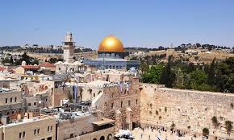
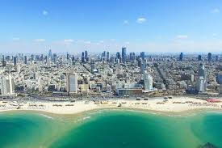

contact me
gallery
more info
well come to the center of israel!
what sord of information are you looking for?
reccomended trails in center
reccomended atractions
some tips of mine
in the center there are mainly cities, but if youll go hier to jerusalem or around you can find both cities and nature trails
jerusalem tours

tel aviv tours

jerusalem mountains
yarkon-national-park
here are some reccomneded atraction in some of the areas
tel aviv atractions
jerusalem atractions
here some tip of mine for this arean
"And eternity is Jerusalem"
by Tractate Brachot Nach A
israel have been going through alot for thousands of years, search for history sites and you will not get disappointed
enjoy the visit!